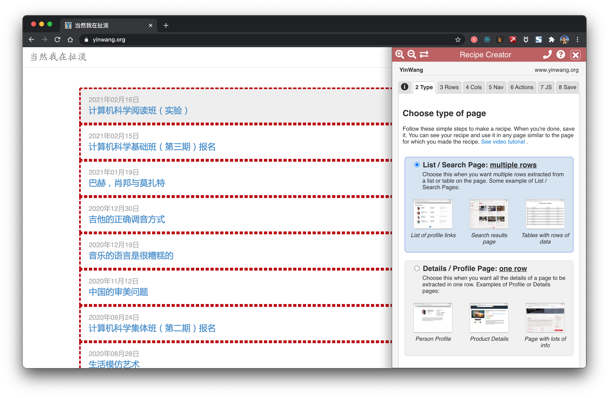
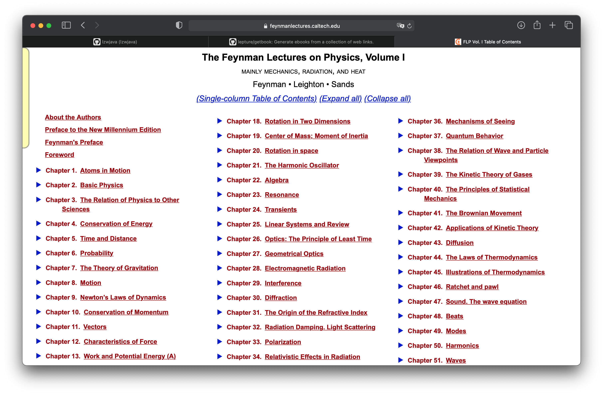
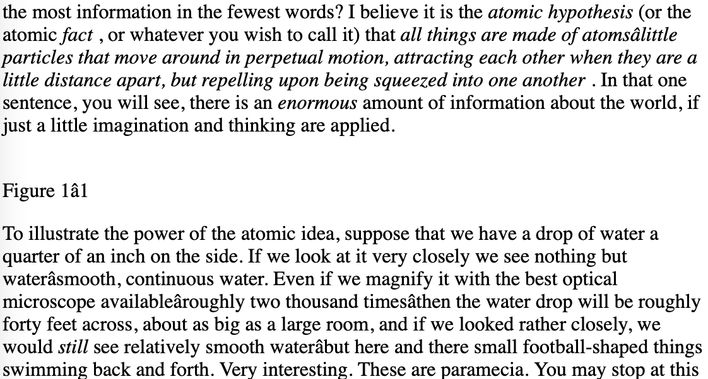

ウェブサイトの内容をスクレイピングする | オリジナル、AI翻訳
既に多くの既存ツールがウェブサイトのコンテンツをスクレイピングするために利用可能です。しかし、それらを使用するだけでは、背後にあるプロセスを深く理解することはできません。仕事で複雑なサイトや特殊なサイトに遭遇した場合、これらのツールでは望む結果が得られないこともあります。私たちは、それらをよりよく学び、より効果的に活用するために、自ら「車輪を再発明」する必要があるのです。
また、既存のツールも見てみましょう。
データマイナー

Data Minerは、Chrome上の非常に便利な拡張機能です。リンクやコンテンツを簡単にスクレイピングするのに役立ちます。
getbook
getbookは、電子書籍を作成するための非常に便利なツールです。
pip install getbook
{
"title": "本のタイトル",
"author": "著者名",
"description": "本の説明",
"language": "ja",
"plugins": ["plugin1", "plugin2"]
}
{
"uid": "book",
"title": "Hello World",
"author": "Armin",
"chapters": [
"http://lucumr.pocoo.org/2018/7/13/python/",
"http://lucumr.pocoo.org/2017/6/5/diversity-in-technology",
]
}
getbook -f ./book.json --mobi
このコマンドは、指定されたbook.jsonファイルから書籍を取得し、Mobi形式で出力するものです。
これにより、いくつかのリンクを電子書籍として簡単にまとめることができます。Data Minerとgetbookを使用することで、一つはリンクをクロールし、もう一つはリンクを電子書籍に変換するため、電子書籍の作成が非常に便利になります。
ファインマン物理学講義

「プロジェクト実践：ファインマン物理学講義のウェブページを電子書籍にする」の章では、mathjaxでレンダリングされたhtmlウェブページを電子書籍にする方法を学びました。ここでは、このプロジェクトを続けて、すべてのウェブページを取得する方法を見ていきます。ファインマン物理学講義は全3巻です。上の画像は第1巻の目次です。
http.client — HTTPプロトコルクライアント
ソースコード: Lib/http/client.py
このモジュールは、HTTPおよびHTTPSプロトコルのクライアント側を実装するクラスを定義しています。通常、直接使用されることはありません —
urllib.requestモジュールがHTTPおよびHTTPSを使用するURLを処理するためにこれを使用します。参考: より高レベルのHTTPクライアントインターフェースには、Requestsパッケージが推奨されます。
requestsはより高レベルのインターフェースであることがわかります。
import requests
def main():
r = requests.get('https://api.github.com/user', auth=('user', 'pass'))
print(r.status_code)
main()
```shell
401
import requests
def main():
r = requests.get('https://github.com')
print(r.status_code)
print(r.text)
main()
```html
200
<html>
...
</html>
上記のコードブロックは、HTMLの基本的な構造を示しています。200はHTTPステータスコードで、リクエストが成功したことを示します。<html>タグはHTMLドキュメントのルート要素であり、その中に他のすべての要素が含まれます。...の部分には、実際のHTMLコンテンツが入ります。
試してみたところ、requestsのインターフェースが使えることが確認できました。
<div class="toc-chapter" id="C03">
<span class="triangle">
â¶
</span>
<a class="chapterlink" href="javascript:Goto(1,3)">
<span class="tag">
第3章.
</span>
物理学と他の科学との関係
</a>
<div class="sections">
<a href="javascript:Goto(1,3,1)">
<span class="tag">
3-1
</span>
序論
</a>
<a href="javascript:Goto(1,3,2)">
<span class="tag">
3-2
</span>
化学
</a>
<a href="javascript:Goto(1,3,3)">
<span class="tag">
3-3
</span>
生物学
</a>
<a href="javascript:Goto(1,3,4)">
<span class="tag">
3-4
</span>
天文学
</a>
<a href="javascript:Goto(1,3,5)">
<span class="tag">
3-5
</span>
地質学
</a>
<a href="javascript:Goto(1,3,6)">
<span class="tag">
3-6
</span>
心理学
</a>
<a href="javascript:Goto(1,3,7)">
<span class="tag">
3-7
</span>
どうしてそうなったのか？
</a>
</div>
</div>
これは目次ページ内の第三章节のhtmlコードです。ここから各章节のリンクを取得したいと考えています。<a href="javascript:Goto(1,3,7)">とあるように、これはjavascriptのリンクです。
https://www.feynmanlectures.caltech.edu/I_03.html
次に、各章のパスが非常に規則的であることに気づきました。I_03.htmlは、第1巻の第3章を表しています。
import requests
from bs4 import BeautifulSoup
from multiprocessing import Process
def scrape(chapter):
if chapter < 1 or chapter > 52:
raise Exception(f'chapter {chapter}')
chapter_str = '{:02d}'.format(chapter)
url = f'https://www.feynmanlectures.caltech.edu/I_{chapter_str}.html'
print(f'scraping {url}')
r = requests.get(url)
if r.status_code != 200:
raise Exception(r.status_code)
soup = BeautifulSoup(r.text, features='lxml')
f = open(f'./chapters/I_{chapter_str}.html', 'w')
f.write(soup.prettify())
f.close()
このコードは、指定された章番号に基づいてFeynman Lecturesのウェブページをスクレイピングし、その内容をHTMLファイルとして保存する関数です。以下にその動作を説明します。
- 章番号のチェック: 章番号が1から52の範囲内にあるかどうかを確認します。範囲外の場合は例外を発生させます。
- URLの生成: 章番号を2桁の文字列に変換し、Feynman Lecturesの該当する章のURLを生成します。
- ウェブページの取得:
requestsライブラリを使用して、生成したURLからウェブページの内容を取得します。 - ステータスコードの確認: 取得したウェブページのステータスコードが200（成功）でない場合、例外を発生させます。
- HTMLの解析:
BeautifulSoupを使用して、取得したHTMLを解析します。 - ファイルへの保存: 解析したHTMLを整形して、指定されたパスにHTMLファイルとして保存します。
この関数を使用することで、指定された章の内容を簡単に取得し、ローカルに保存することができます。
def main():
for i in range(52):
p = Process(target=scrape, args=(i+1))
p.start()
p.join()
main()
続いて、スクレイピングのコードについて書いていきます。ここではProcessを使用しています。
raise RuntimeError('''
RuntimeError:
現在のプロセスのブートストラップフェーズが完了する前に、
新しいプロセスの開始が試みられました。
これはおそらく、子プロセスを開始するために fork を使用しておらず、
メインモジュールで適切なイディオムを使用するのを忘れていることを意味します:
if __name__ == '__main__':
freeze_support()
...
プログラムが実行ファイルを生成するためにフリーズされる予定がない場合、
"freeze_support()" の行は省略できます。 ```
def main():
for i in range(52):
p = Process(target=scrape, args=(i+1,))
p.start()
p.join()
このコードは、Pythonのmultiprocessingモジュールを使用して、52個のプロセスを並列に実行するものです。各プロセスはscrape関数を実行し、引数としてi+1を渡します。最後にp.join()を呼び出すことで、すべてのプロセスが終了するのを待ちます。
if __name__ == "__main__":
main()
def main():
start = timeit.default_timer()
ps = [Process(target=scrape, args=(i+1,)) for i in range(52)]
for p in ps:
p.start()
for p in ps:
p.join()
stop = timeit.default_timer()
print('Time: ', stop - start)
if __name__ == "__main__":
main()
scraping https://www.feynmanlectures.caltech.edu/I_01.html
scraping https://www.feynmanlectures.caltech.edu/I_04.html
...
scraping https://www.feynmanlectures.caltech.edu/I_51.html
scraping https://www.feynmanlectures.caltech.edu/I_52.html
時間: 9.144841699秒

<div class="figure" id="Ch1-F1">
<img src="img/FLP_I/f01-01/f01-01_tc_big.svgz">
<div class="caption empty">
<span class="tag">
図1–1
</span>
</div>
</div>
import requests
from bs4 import BeautifulSoup
from multiprocessing import Process
import timeit
def scrape(chapter):
if chapter < 1 or chapter > 52:
raise Exception(f'chapter {chapter}')
chapter_str = '{:02d}'.format(chapter)
url = f'https://www.feynmanlectures.caltech.edu/I_{chapter_str}.html'
print(f'scraping {url}')
r = requests.get(url)
if r.status_code != 200:
raise Exception(r.status_code)
soup = BeautifulSoup(r.text, features='lxml')
f = open(f'./chapters/I_{chapter_str}.html', 'w')
f.write(soup.prettify())
f.close()
このコードは、指定された章番号に基づいて、Feynman Lecturesのウェブページをスクレイピングし、その内容をHTMLファイルとして保存する関数です。以下にその動作を説明します。
- 引数のチェック:
chapterが1から52の範囲外の場合、例外を発生させます。 - URLの生成: 章番号を2桁の文字列に変換し、それに基づいてURLを生成します。
- ウェブページの取得:
requestsライブラリを使用して、指定されたURLからウェブページの内容を取得します。 - ステータスコードの確認: レスポンスのステータスコードが200（成功）でない場合、例外を発生させます。
- HTMLの解析:
BeautifulSoupを使用して、取得したHTMLを解析します。 - ファイルへの保存: 解析したHTMLを整形して、指定されたファイル名で保存します。
この関数を使用することで、指定された章の内容を簡単に取得し、ローカルに保存することができます。
def main():
start = timeit.default_timer()
ps = [Process(target=scrape, args=(i+1,)) for i in range(52)]
for p in ps:
p.start()
for p in ps:
p.join()
stop = timeit.default_timer()
print('Time: ', stop - start)
if __name__ == "__main__":
main()
リンクを確認してください。
imgs = soup.find_all('img')
for img in imgs:
print(img)
このコードは、BeautifulSoupを使ってHTMLからすべての画像タグ(<img>)を検索し、それぞれの画像タグを出力するものです。soup.find_all('img')は、HTMLドキュメント内のすべての<img>タグをリストとして返します。その後、forループを使って各画像タグを順番に出力しています。
https://www.feynmanlectures.caltech.edu/I_01.html をスクレイピング中
<img id="TwitLink" src=""/>
<img id="FBLink" src=""/>
<img id="MailLink" src=""/>
<img id="MobileLink" src=""/>
<img id="DarkModeLink" src=""/>
<img id="DesktopLink" src=""/>
<img src="img/camera.svg"/>
<img src="img/FLP_I/f01-00/f01-00.jpg"/>
<img data-src="img/FLP_I/f01-01/f01-01_tc_big.svgz"/>
<img data-src="img/FLP_I/f01-02/f01-02_tc_big.svgz"/>
<img data-src="img/FLP_I/f01-03/f01-03_tc_big.svgz"/>
<img data-src="img/FLP_I/f01-04/f01-04_tc_big.svgz"/>
<img data-src="img/FLP_I/f01-05/f01-05_tc_big.svgz"/>
<img data-src="img/FLP_I/f01-06/f01-06_tc_big.svgz"/>
<img class="first" data-src="img/FLP_I/f01-07/f01-07_tc_iPad_big_a.svgz"/>
<img class="last" data-src="img/FLP_I/f01-07/f01-07_tc_iPad_big_b.svgz"/>
<img data-src="img/FLP_I/f01-08/f01-08_tc_big.svgz"/>
<img data-src="img/FLP_I/f01-09/f01-09_tc_big.svgz"/>
<img data-src="img/FLP_I/f01-10/f01-10_tc_big.svgz"/>
https://www.feynmanlectures.caltech.edu/img/FLP_I/f01-01/f01-01_tc_big.svgz
禁止されています
このリソースにアクセスする権限がありません。
Apache/2.4.38 (Debian) サーバー at www.feynmanlectures.caltech.edu Port 443
```shell
% pip install selenium
Collecting selenium
Using cached selenium-3.141.0-py2.py3-none-any.whl (904 kB)
Requirement already satisfied: urllib3 in /usr/local/lib/python3.9/site-packages (from selenium) (1.24.2)
Installing collected packages: selenium
Successfully installed selenium-3.141.0
上記のコマンドは、Pythonのパッケージ管理ツールであるpipを使用して、Seleniumライブラリをインストールするプロセスを示しています。Seleniumは、ウェブブラウザの自動化に広く使用されるツールです。このコマンドを実行すると、Seleniumの最新バージョンがダウンロードされ、システムにインストールされます。urllib3という依存パッケージが既にインストールされている場合、そのパッケージは再インストールされません。最後に、Seleniumが正常にインストールされたことが表示されます。
export CHROME_DRIVER_HOME=$HOME/dev-env/chromedriver
export PATH="${PATH}:${CHROME_DRIVER_HOME}"
このコードは、シェル環境でChromeDriverのパスを設定するためのものです。CHROME_DRIVER_HOMEという環境変数にChromeDriverのインストールディレクトリを指定し、そのディレクトリをPATHに追加しています。これにより、ターミナルからchromedriverコマンドを直接実行できるようになります。
% chromedriver -h
使用方法: chromedriver [オプション]
オプション –port=PORT リッスンするポート –adb-port=PORT adbサーバーのポート –log-path=FILE サーバーログを標準エラー出力ではなくファイルに書き込み、ログレベルをINFOに上げる –log-level=LEVEL ログレベルを設定: ALL, DEBUG, INFO, WARNING, SEVERE, OFF –verbose 詳細にログを記録する（–log-level=ALL と同等） –silent 何もログに記録しない（–log-level=OFF と同等） –append-log ログファイルを上書きせずに追記する –replayable （実験的）詳細にログを記録し、長い文字列を切り詰めないようにして、ログを再生できるようにする –version バージョン番号を表示して終了する –url-base コマンドのベースURLパスプレフィックス、例: wd/url –readable-timestamp ログに読みやすいタイムスタンプを追加する –enable-chrome-logs ブラウザからのログを表示する（他のログオプションを上書き） –allowed-ips ChromeDriverに接続を許可するリモートIPアドレスのカンマ区切り許可リスト
# コードブロックの開始を示すマークダウン記法
# ここにPythonコードを記述します
print("Hello, World!")
from selenium import webdriver
from selenium.webdriver.common.by import By
from selenium.webdriver.common.keys import Keys
from selenium.webdriver.support.ui import WebDriverWait
from selenium.webdriver.support.expected_conditions import presence_of_element_located
このコードは、Seleniumを使用してウェブブラウザを自動化するための基本的なインポート文です。以下に各インポートの説明を示します：
webdriver: Seleniumのコアモジュールで、ブラウザのインスタンスを作成し操作するために使用されます。By: 要素を検索するためのメソッドを提供します（例:By.ID,By.NAME,By.CLASS_NAMEなど）。Keys: キーボード操作をシミュレートするためのキー（例:Keys.ENTER,Keys.TABなど）を提供します。WebDriverWait: 特定の条件が満たされるまで待機するためのユーティリティを提供します。presence_of_element_located: 指定された要素がDOMに存在するかどうかを確認するための条件を提供します。
これらのインポートを使用して、ウェブページの要素を操作し、自動化されたテストやスクレイピングを行うことができます。
with webdriver.Chrome() as driver:
wait = WebDriverWait(driver, 10)
driver.get("https://google.com/ncr")
driver.find_element(By.NAME, "q").send_keys("cheese" + Keys.RETURN)
first_result = wait.until(presence_of_element_located((By.CSS_SELECTOR, "h3>div")))
print(first_result.get_attribute("textContent"))
# このコードブロックはPythonのコードを示しています。
# ここにPythonのコードを書くことができます。
from selenium import webdriver
from selenium.webdriver.common.by import By
from selenium.webdriver.common.keys import Keys
from selenium.webdriver.support.ui import WebDriverWait
from selenium.webdriver.support.expected_conditions import presence_of_element_located
import urllib
このコードは、Seleniumを使用してウェブブラウザを自動化し、ウェブページ上の要素を操作するための基本的なインポート文です。以下に各インポートの説明を示します：
webdriver: Seleniumのコアモジュールで、ブラウザのインスタンスを作成し、操作するために使用されます。By: 要素を検索するための戦略（例: ID、クラス名、CSSセレクタなど）を提供します。Keys: キーボード操作（例: Enterキー、Tabキーなど）をシミュレートするために使用されます。WebDriverWait: 特定の条件が満たされるまで待機するためのユーティリティです。presence_of_element_located: 指定された要素がDOMに存在するかどうかを確認するための条件です。urllib: URLを操作するための標準ライブラリです（このコードでは使用されていませんが、インポートされています）。
def main():
driver = webdriver.Chrome()
wait = WebDriverWait(driver, 10)
driver.get("https://www.feynmanlectures.caltech.edu/I_01.html")
elements = driver.find_elements(By.TAG_NAME, "img")
# print(dir(elements[0]))
print(driver.page_source)
i = 0
for element in elements:
# src = element.get_attribute('src')
element.screenshot(f'images/{i}.png')
i +=1
driver.close()
main()
from bs4 import BeautifulSoup
from multiprocessing import Process
import timeit
from pathlib import Path
from selenium import webdriver
from selenium.webdriver.common.by import By
def img_path(chapter):
return f'./chapters/{chapter}/img'
def img_name(url):
splits = url.split('/')
last = splits[len(splits) - 1]
parts = last.split('.')
name = parts[0]
return name
def download_images(driver: webdriver.Chrome, chapter):
path = img_path(chapter)
Path(path).mkdir(parents=True, exist_ok=True)
elements = driver.find_elements(By.TAG_NAME, "img")
for element in elements:
src = element.get_attribute('src')
name = img_name(src)
element.screenshot(f'{path}/{name}.png')
このコードは、指定された章の画像をダウンロードするための関数です。以下にその動作を説明します。
path = img_path(chapter)：指定された章に対応する画像の保存先パスを取得します。Path(path).mkdir(parents=True, exist_ok=True)：保存先ディレクトリが存在しない場合、親ディレクトリも含めて作成します。elements = driver.find_elements(By.TAG_NAME, "img")：ウェブページ内のすべての<img>タグを取得します。for element in elements:：各画像要素に対して以下の処理を行います。src = element.get_attribute('src')：画像のソースURLを取得します。name = img_name(src)：ソースURLから画像の名前を生成します。element.screenshot(f'{path}/{name}.png')：画像をスクリーンショットとして保存します。
この関数を使用することで、指定された章の画像を自動的にダウンロードし、指定されたパスに保存することができます。
USER_AGENT = 'Mozilla/5.0 (Macintosh; Intel Mac OS X 10_15_6) AppleWebKit/605.1.15 (KHTML, like Gecko) Version/14.0.3 Safari/605.1.15'
このコードは、ウェブスクレイピングやAPIリクエストを行う際に使用されるユーザーエージェント文字列を定義しています。この特定のユーザーエージェントは、Mac OS X 10.15.6上で動作するSafari 14.0.3を模倣しています。これにより、ウェブサーバーに対して、リクエストがMacのSafariブラウザから来ているように見せることができます。
def scrape(chapter):
if chapter < 1 or chapter > 52:
raise Exception(f'chapter {chapter}')
chapter_str = '{:02d}'.format(chapter)
url = f'https://www.feynmanlectures.caltech.edu/I_{chapter_str}.html'
driver = webdriver.Chrome()
driver.get(url)
page_source = driver.page_source
Path(f'./chapters/{chapter_str}').mkdir(parents=True, exist_ok=True)
print(f'scraping {url}')
download_images(driver, chapter_str)
soup = BeautifulSoup(page_source, features='lxml')
imgs = soup.find_all('img')
for img in imgs:
if 'src' in img.attrs or 'data-src' in img.attrs:
src = ''
if 'src' in img.attrs:
src = img.attrs['src']
elif 'data-src' in img.attrs:
src = img.attrs['data-src']
del img.attrs['data-src']
name = img_name(src)
img.attrs['src'] = f'img/{name}.png'
f = open(f'./chapters/{chapter_str}/I_{chapter_str}.html', 'w')
f.write(soup.prettify())
f.close()
driver.close()
このコードは、指定された章番号に基づいてFeynman Lecturesのウェブページをスクレイピングし、画像をダウンロードしてHTMLファイルを保存する関数です。以下にその動作を説明します。
- 章番号のチェック: 章番号が1から52の範囲内にあるかどうかを確認します。範囲外の場合は例外を発生させます。
- URLの生成: 指定された章番号に基づいて、Feynman Lecturesの該当する章のURLを生成します。
- WebDriverの起動: ChromeのWebDriverを起動し、生成したURLにアクセスします。
- ページソースの取得: アクセスしたページのHTMLソースを取得します。
- ディレクトリの作成: 章ごとのディレクトリを作成します。既に存在する場合は何もしません。
- 画像のダウンロード: ページ内の画像をダウンロードします。
- HTMLの解析と修正: BeautifulSoupを使用してHTMLを解析し、画像の
src属性を修正します。data-src属性がある場合は、それをsrcに置き換えます。 - HTMLファイルの保存: 修正したHTMLをファイルとして保存します。
- WebDriverの終了: WebDriverを閉じて、リソースを解放します。
この関数を使用することで、指定された章の内容をローカルに保存し、オフラインで閲覧することが可能になります。
def main():
start = timeit.default_timer()
ps = [Process(target=scrape, args=(i+1,)) for i in range(2)]
for p in ps:
p.start()
for p in ps:
p.join()
stop = timeit.default_timer()
print('Time: ', stop - start)
if __name__ == "__main__":
main()
スクレイピング中 https://www.feynmanlectures.caltech.edu/I_01.html
スクレイピング中 https://www.feynmanlectures.caltech.edu/I_02.html
時間: 21.478510914999998
errpipe_read, errpipe_write = os.pipe()
OSError: [Errno 24] 開いているファイルが多すぎます
% ulimit a
ulimit: 無効な数値: a
lzw@lzwjava feynman-lectures-mobi % ulimit -a
-t: CPU時間（秒） 無制限
-f: ファイルサイズ（ブロック） 無制限
-d: データセグメントサイズ（キロバイト） 無制限
-s: スタックサイズ（キロバイト） 8192
-c: コアファイルサイズ（ブロック） 0
-v: アドレス空間（キロバイト） 無制限
-l: メモリにロックされたサイズ（キロバイト） 無制限
-u: プロセス数 2784
-n: ファイルディスクリプタ数 256
12
download_images
12
mathjax2svg
latexs 128
make_svg 0
insert_svg 0
make_svg 1
insert_svg 1
make_svg 2
insert_svg 2
make_svg 3
insert_svg 3
convert
このコードブロックは、特定のタスクを実行するためのシェルスクリプトの一部のようです。各コマンドは、画像のダウンロード、MathJaxからSVGへの変換、LaTeXの処理、SVGの生成と挿入、そして最終的な変換を行うためのステップを示しています。具体的な内容や目的は、このコードが属するプロジェクトやコンテキストに依存します。
12
download_images
12
mathjax2svg
latexs 0
latexs 0
convert
Time: 11.369145162
（注：上記のコードブロックは、特定のコマンドやプロセスの実行結果を示すものであり、翻訳の必要はありません。そのままの形で使用してください。）
% grep --include=\*.html -r '\$' *
43/I_43.html:長い時間 $T$ の間に、一定の数 $N$ の衝突があるとします。もし私たちが
43/I_43.html:衝突の数は時間 $T$ に比例します。私たちは
43/I_43.html:比例定数を $1/\tau$ と書きました。ここで
43/I_43.html:$\tau$ は時間の次元を持つ定数です。この定数 $\tau$ は
43/I_43.html:60回の衝突があるとすると、$\tau$ は1分です。私たちは
43/I_43.html:$\tau$（1分）が
エラー E21018: ファイルの内容を解析中に、改良されたMobiドメインの作成に失敗しました。内容：<In earlier chapters > ファイル： /private/var/folders/_3/n3b7dq8x6652drmx6_d3t3bh0000gr/T/069e0b8a-f12e-4102-aed3-977c0c3c1178/cTemp/mTemp/mobi-GxL1ye/OEBPS/c-49.xhtml 行： 969
警告 W28001: Kindleリーダーは、コンテンツ内で指定されたCSSスタイルをサポートしていません。CSSプロパティを削除中： 'max-width' ファイル： /private/var/folders/_3/n3b7dq8x6652drmx6_d3t3bh0000gr/T/069e0b8a-f12e-4102-aed3-977c0c3c1178/cTemp/mTemp/mobi-GxL1ye/OEBPS/stylesheet.css
警告 W29004: 強制的に閉じられた開いているタグ： <span amzn-src-id="985"> ファイル： /private/var/folders/_3/n3b7dq8x6652drmx6_d3t3bh0000gr/T/069e0b8a-f12e-4102-aed3-977c0c3c1178/cTemp/mTemp/mobi-GxL1ye/OEBPS/c-4.xhtml 行： 0000102
警告 W29004: 強制的に閉じられた開いているタグ： <p amzn-src-id="975"> ファイル： /private/var/folders/_3/n3b7dq8x6652drmx6_d3t3bh0000gr/T/069e0b8a-f12e-4102-aed3-977c0c3c1178/cTemp/mTemp/mobi-GxL1ye/OEBPS/c-4.xhtml 行： 0000102
警告 W14001: ハイパーリンクに問題があり、未解決です: /private/var/folders/_3/n3b7dq8x6652drmx6_d3t3bh0000gr/T/97c9cb4d-35f7-4920-81eb-4705325c482f/cTemp/mTemp/mobi-pvawPN/OEBPS/c-1.xhtml#Ch1-F1
警告 W14001: ハイパーリンクに問題があり、未解決です: /private/var/folders/_3/n3b7dq8x6652drmx6_d3t3bh0000gr/T/97c9cb4d-35f7-4920-81eb-4705325c482f/cTemp/mTemp/mobi-pvawPN/OEBPS/c-1.xhtml#Ch1-F2
警告 W14001: ハイパーリンクに問題があり、未解決です: /private/var/folders/_3/n3b7dq8x6652drmx6_d3t3bh0000gr/T/97c9cb4d-35f7-4920-81eb-4705325c482f/cTemp/mTemp/mobi-pvawPN/OEBPS/c-1.xhtml#Ch1-F3
<span class="disabled" href="#Ch1-F1">
1–1
</span>
このHTMLコードは、disabledクラスが適用されたspan要素を含んでいます。この要素は、リンク先として#Ch1-F1を指定していますが、disabledクラスが適用されているため、リンクとして機能しない可能性があります。1–1というテキストが表示されますが、クリックしても何も起こらないか、またはリンクが無効化されている状態です。
'OEBPS/84b8b4179175f097be1180a10089107be75d7d85.svg' を 1264x1011 にラスタライズ中
'OEBPS/23a4df37f269c8ed43f54753eb838b29cff538a1.svg' を 1264x259 にラスタライズ中
Traceback (most recent call last):
File "runpy.py", line 194, in _run_module_as_main
File "runpy.py", line 87, in _run_code
File "site.py", line 39, in <module>
File "site.py", line 35, in main
File "calibre/utils/ipc/worker.py", line 216, in main
File "calibre/gui2/convert/gui_conversion.py", line 41, in gui_convert_override
File "calibre/gui2/convert/gui_conversion.py", line 28, in gui_convert
File "calibre/ebooks/conversion/plumber.py", line 1274, in run
File "calibre/ebooks/conversion/plugins/mobi_output.py", line 214, in convert
File "calibre/ebooks/conversion/plugins/mobi_output.py", line 237, in write_mobi
File "calibre/ebooks/oeb/transforms/rasterize.py", line 55, in __call__
File "calibre/ebooks/oeb/transforms/rasterize.py", line 142, in rasterize_spine
File "calibre/ebooks/oeb/transforms/rasterize.py", line 152, in rasterize_item
File "calibre/ebooks/oeb/transforms/rasterize.py", line 185, in rasterize_external
File "calibre/ebooks/oeb/base.py", line 1092, in bytes_representation
File "calibre/ebooks/oeb/base.py", line 432, in serialize
TypeError: 'NoneType' オブジェクトをバイトに変換できません
% kindlepreviewer feynman-lectures-on-physics-volumn-1.epub -convert
指定された引数を確認しています。
前処理を進行中です。
1/1 の本を処理中です。
本が警告付きで変換されました！: /Users/lzw/projects/feynman-lectures-mobi/feynman-lectures-on-physics-volumn-1.epub
後処理を進行中です。
出力/ログファイルを /Users/lzw/projects/feynman-lectures-mobi/output に書き込んでいます。
マニフェストのクリーンアップ中...
マニフェストから未使用のファイルを削除中...
AZW3出力を作成中...
リソースをシリアライズ中...
ページの区切りやフローの制限に基づいてマークアップを分割中（該当する場合）...
KF8出力を作成中
KF8マークアップを生成中...
タグテーブルにaidがなく、チャンクサイズが大きすぎます。それでも追加します。
タグテーブルにaidがなく、チャンクサイズが大きすぎます。それでも追加します。
タグテーブルにaidがなく、チャンクサイズが大きすぎます。それでも追加します。
マークアップを圧縮中...
インデックスを作成中...